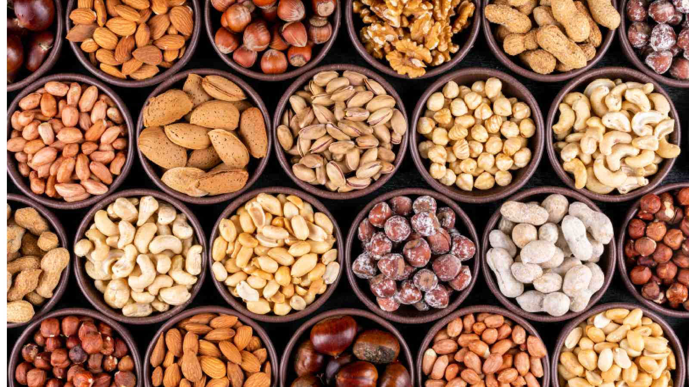
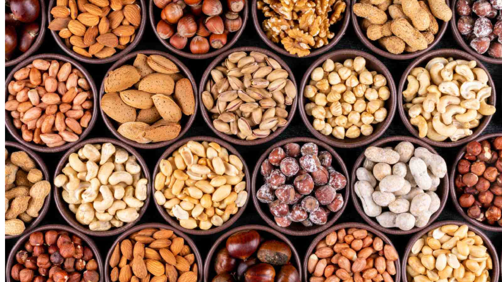

Nutrition Tips

Eating a balanced diet is essential for maintaining good health. Make sure to include plenty of fruits, vegetables, and lean proteins in your meals.
Boost Your Minerals

Certain minerals are indispensable for human health, particularly Calcium and Magnesium. These two compounds are essential for strong bones and teeth, proper heartbeat, muscle health, nerve function, and much more. However, many Americans may lack these vitalizing earth elements. A multi-year study of over 16,000 American adults found that 39% weren’t meeting average requirements for Calcium intake and 46% were below requirements for Magnesium. Well-absorbed mineral supplements like our sea-sourced plant Calcium complex and our well-absorbed Magnesium formula can help fill nutrient gaps. Get peace of mind that you’re maintaining strong, healthy foundations!
Track Your Fitness

If you’re exercising, that’s fantastic! But how do you know if you’re getting enough exercise and variety from week to week? Fortunately, there are a lot of ways to track your fitness. Many fitness tracking apps are available for your phone or smartwatch, and most of them are free. A fitness tracking app can help you understand how active you are every day, so you can set goals or adjust your lifestyle as needed. You can also try an exercise watch or fitness band, which can track your heart rate and tell you how many steps you take daily. If you want a technology-free solution, use a notebook to log your efforts, or get a workout buddy and support each other.
Eat More Fruits and Vegetables

Many people struggle to get enough fruits and vegetables in their daily meals. Fruits and vegetables are the cornerstones of a healthy diet because they’re packed with nutrients and provide dietary fiber. Different colors deliver different phytonutrients, so try to eat a rainbow of options.
Drink Water Regularly

Not drinking enough water throughout the day can leave you feeling sore, tired, and unfocused. Stay hydrated by drinking water throughout the day.
Eat More Herbs & Spices

Let’s face it—the typical American diet isn’t exactly bursting with studied herbs like Turmeric, Ginger, and Green Tea. But these kinds of herbal allies are packed with unique phytonutrients that can support your health. Turmeric supports healthy inflammation response for example, while Ginger is a powerful digestive aid and Green Tea has antioxidant action that helps protect cells. Pack more herbs and spices into your day by adding them to smoothies and entrees, or drinking them in herbal teas. Add high-quality herbal supplements to your routine to make sure you’re getting key phytonutrients for targeted benefits
Take a Multivitamin

A balanced diet helps you maintain good physical and mental health. However, busy adults are prone to making unhealthy meal choices or skipping meals altogether, so they may not get enough nutrients on a given day. Taking a multivitamin is an easy way to fill nutritional gaps in your eating pattern.Multivitamins are formulated for absorption with fermented nutrients and made with organic vegetables and herbs. Need help remembering to take your vitamins? Try setting a phone alarm or getting a vitamin case. Make a habit of taking your vitamins at the same time every day.
Exercise Routines

Regular exercise can improve your physical and mental health. Try to incorporate at least 30 minutes of activity into your daily routine.
Choose Organic Foods When Possible

Organic foods are good for you and for the planet. Pure and simple. The benefits of choosing organic include better nutrient content and less chemical residue. When possible, reach for organic meats, cheeses, and produce at the store. Look for organic certifications on labels to ensure your food was grown with care for the planet. Farmers’ markets, co-ops, and local farms are great places to find organic options
Mental Health

Mental health is just as important as physical health. Practice mindfulness, meditation, or other activities that help reduce stress.
Get Enough Sleep
Being well-rested is good for your wellness! That’s right, getting a full night’s sleep is an important part of holistic health. According to the CDC, adults aged 18-60 need a minimum of 7 hours of sleep a night. However, struggling to get to sleep is a common problem among adults. Inability to fall asleep and poor sleep quality can be due to a variety of reasons, from stress to noise to the distractions of technology. Improve your sleep naturally by establishing a nightly sleep routine. Turn off devices such as phones and computers an hour before you go to bed. Reserve that time for quiet activities such as reading, journaling, or drinking herbal tea. Before bed, try taking a targeted serving of of non-groggy melatonin to combat restlessness and promote deep, sound sleep.
Listen to Music
f you begin to feel overwhelmed by the stresses of the day, try listening to music. Research conducted by Johns Hopkins found that music has many positive health benefits, including reducing anxiety, lowering blood pressure, and improving sleep quality. Did you know that listening to a familiar song can even help with memory recall? Listen to music while working or before going to bed at night to tap into its calming effects.
Get Outside
Nature is a great remedy for stress. Sometimes, there is nothing better for your mental and emotional wellness than going outside. The American Heart Association says that spending time in nature can relieve stress, improve mood, and generally boost your well-being. During the workweek, consider stepping outside on your lunch break. On the weekends, participate in outdoor activities such as gardening, walking, or cycling.
Minimize Your Sugar Intake
Cutting back on sugar in your diet can help you manage weight and improve your overall nutrition. It seems simple enough, but do you know what to look for? Sugar comes in a lot of different forms; some you may recognize and some you may not. Check the nutrition label on packaging for ingredients such as sucrose, glucose, fructose, corn syrup, or hydrolyzed starch. All of these are sugars! A simple way to cut back on sugar is to make healthier choices in the store. Reach for fresh, organic produce instead of processed foods. Choose unsweetened oatmeal over that sugary cereal. Consider replacing sweetened juice cocktails with 100% fruit juice (with no added sugar or flavors). Swap your sweetened yogurt for plain yogurt; sweeten it yourself with fresh fruit. Cut back on sugar in cooking or baking recipes (you probably won’t even miss it!)